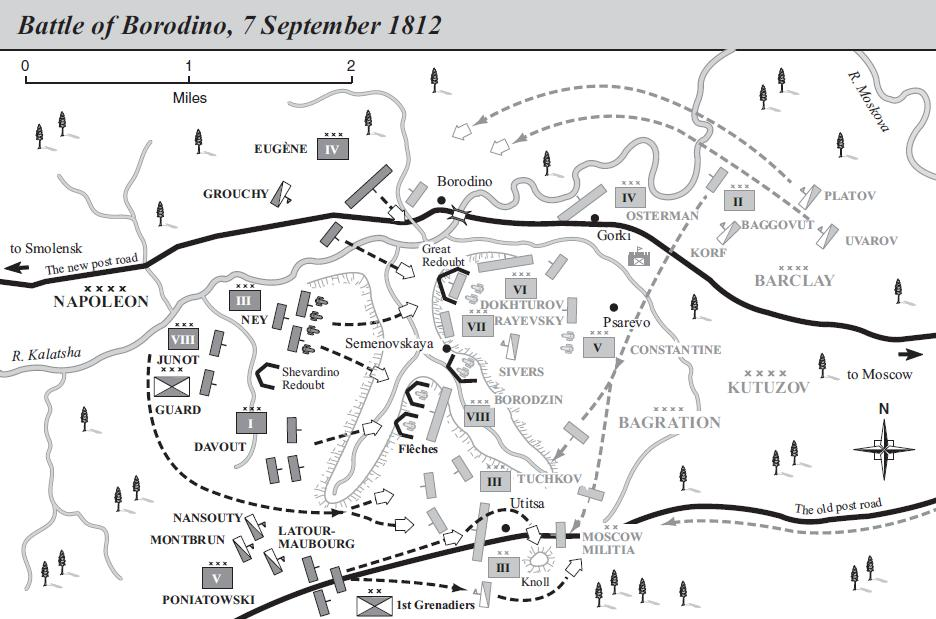

Chương XIII
1
Khi bắt đầu bất cứ một trận nào trong những cuộc chiến tranh liên miên của mình, Napoléon cũng luôn luôn chú ý tới hai vấn đề chính yếu: Một là con người của viên tướng Tổng Tư Lệnh đối phương và hai là tình hình chung bộ máy chỉ huy của đối phương. Viên tướng Tổng Tư Lệnh ấy có mạnh không? Có được hành động tự do tuyệt đối không? Trước hết Napoléon quan tâm đến hai vấn đề có tầm quan trọng cơ bản ấy.
Trong trường hợp đặc biệt, hình như Napoléon có thể trả lời hai vấn đề ấy một cách đầy đủ nhất. Người Nga chỉ có một viên tướng giỏi, xứng đáng, là Bagration nhưng Bagration lại bị đặt vào địa vị thứ yếu. Còn Bennigsen thì kém xa Bagration, bị Napoléon gọi là “một kẻ bất lực” đã bị đánh bại tan tành ở Friedland nhưng Bennigsen không phải là con người kém ngoan cường và quả quyết, và đã tỏ ra cương nghị, không phải bằng việc bóp chết Hoàng Đế Pavel năm xưa, mà bằng sự chống cự phi thường của ông ta suốt trong một ngày huyết chiến ở Eylau, nhưng Bennigsen cũng chỉ ở vào địa vị thứ yếu. Còn Kutuzov? Tuy Napoléon đã đánh bại được Kutuzov ở Austerlitz, song chưa bao giờ ông dám khinh Kutuzov, mà trái lại, còn nhận định Kutuzov là viên tướng mưu trí và khôn ngoan. Nhưng Kutuzov không cầm quân nữa. Còn đối với Barclay de Tolly, Tổng Tư Lệnh kiêm thượng thư Bộ Chiến Tranh, thì Napoléon thiếu tài liệu để đánh giá, nhưng cũng có thiên hướng đánh giá viên tướng này không vượt trình độ thông thường của các tướng lĩnh Nga là mấy, mà theo Napoléon thì trình độ ấy chẳng cao gì lắm. Về vấn đề thứ hai thì có thể có một câu trả lời còn lạc quan hơn: Sự thống nhất chỉ huy trong quân đội Nga hoàn toàn không có, và tổ chức bộ máy chỉ huy thì không đáng bình luận đến. Thật ra cũng không thể khác thế được, vì Aleksandr ở trong quân đội và đã can thiệp vào mọi ý định tổ chức của Barclay. Trên đường hành quân đến sông Vilna, Napoléon đã biết đầy đủ tình hình trên, cho nên ngay ở Vilna Napoléon đã mỉa mai lưu ý Balashov, tướng hậu cần mà Aleksandr cử đến lần đầu tiên và cũng là lần cuối cùng để đề nghị ký hòa ước với Napoléon, rằng: “Tất cả bọn họ làm gì chứ? Trong khi Phull đề nghị thì Arfen phản đối, Bennigsen nghiên cứu thì Barclay là người có trách nhiệm quyết định lại không biết nên quyết định thế nào và thời gian trôi đi chẳng làm được gì cả!”.
Đoạn tường thuật ấy của Balashov về cuộc hội đàm với Napoléon đáng cho ta tin cậy hoàn toàn vì có nhiều bằng chứng khác xác minh thêm, nói chung, bản báo cáo của tướng Balashov, thượng thư Bộ Công An Nga, người mà Aleksandr đã phái đến để đề nghị ký hòa ước với Napoléon ngay khi vừa được tin quân Pháp vượt qua sông Niemen - bản báo cáo đã được Thiers sao lục trong bản thảo tập XIV cuốn Lịch Sử Chế Độ Tổng Tài Và Đế Chế gần như nguyên văn trong một chương hay nổi tiếng của cuốn Chiến Tranh Và Hòa Bình - không đáng tin cậy lắm, đặc biệt là những đoạn viết về Balashov đã dám nói xa xôi đến Tây Ban Nha và dám nhắc đến thành phố Poltava trong khi nói chuyện với Napoléon. Thượng Thư Bộ Công An Nga chưa bao giờ đặc biệt nổi tiếng vì đức chân thật, và rất có thể về sau này vị thượng thư ấy đã ghi thêm chuyện đó vào. Người viết sử phải luôn luôn chú ý đến những sự thêm thắt như vậy. Hesles đã viết cả một cuốn sách nhan đề là Mưu Mẹo Rẻ Tiền Trong Lịch Sử, dành riêng cho những “bí mật lịch sử” và những chước thuật thuộc loại ấy, cũng rất tài trí nhưng được “sáng tạo” quá chậm và chẳng bao giờ được nói ra, bởi vì thật ra chúng chỉ nảy ra trong đầu óc của người sáng tạo ra chúng khi hắn ta đã từ biệt đối phương, và lúc ra “cầu thang” mới nghĩ ra rằng giá như vừa rồi mà nói thêm như thế này hay như thế nọ thì thật tuyệt. Dầu sao Napoléon - con người đã đến Vilna bốn ngày sau khi vượt sông Niemen không gặp một sức kháng cự nào và đã được bọn quý tộc Ba Lan địa phương đón tiếp với những biểu hiện của lòng trung thành đầy tôn kính, và biết rằng lực lượng mình hơn hẳn - đã dứt khoát từ chối đề nghị ký hòa ước của Balashov, đương nhiên là với một giọng gay gắt và xúc phạm. Napoléon đã ở lại Vilna 18 ngày trọn, đó là điều mà sau này các nhà viết sử quân sự cho là một trong những sai lầm tai hại của Napoléon. Nhưng thật ra ở Vilna, cũng như ở Dresden, Napoléon đợi các quân đoàn mới hành quân tới hội sư với ông. Trong số 68 vạn 5 nghìn quân dùng để đánh nước Nga thì hiện Napoléon đã phải để lại 23 vạn 5 nghìn đóng ở Pháp và ở nước Đức chư hầu; chỉ còn 42 vạn nhận lệnh vượt biên giới. Nhưng số 42 vạn quân ấy cũng chỉ kéo dần đến Vilna và tiến dần dần vào nước Nga. Tại Vilna, Napoléon đã nhận được tin đầu tiên bất lợi cho chiến dịch: Ngựa thiếu cỏ chết hàng đàn. Tình hình đáng tiếc khác: Người Ba Lan ở xứ Litva và ở Bạch Nga đã không điều động đủ lực lượng. Khi đến Vilna, những đặc điểm và những khó khăn của công cuộc mà Napoléon hiểu sâu hơn khi chưa vượt qua biên giới lại càng hiểu sâu hơn nữa so với khi ở Dresden. Sự kiện ấy tác động tức khắc đến đường lối của Napoléon: Ông không hợp nhất xứ Litva vào Ba Lan (lúc ấy người ta gọi cả Bạch Nga là Litva) mà đặt nó ở dưới một chế độ cai trị riêng, tạm thời; việc ấy làm cho người Ba Lan thất vọng lớn. Điều đó có nghĩa là Napoléon chưa muốn làm việc gì phương hại đến việc giảng hòa với Aleksandr. Ngay từ lúc đó, tính chất hai mặt đã bắt đầu biểu hiện trong cách xử lý và trong những kế hoạch có quan hệ đến con đường kết thúc của chiến dịch mà Napoléon vừa mới tiến hành. Tất nhiên Napoléon cho kết thúc bằng sự đầu hàng hoàn toàn của Aleksandr và như vậy nước biến thành một chư hầu ngoan ngoãn mà Napoléon cần như vậy để tiếp tục cuộc chiến tranh với nước Anh ở Châu Âu và có thể cả ở Châu Á nữa. Nhưng tình hình càng phát triển thì Napoléon càng có khuynh hướng cho rằng chiến dịch này chỉ là một cuộc “Chiến tranh chính trị” - ít lâu sau khi nói về chiến dịch nước Nga, Napoléon nói như vậy - một cuộc chiến tranh ở văn phòng, như người ta thường nói vào hồi thế kỷ thứ XVIII, nghĩa là một thứ tranh cãi về mặt ngoại giao tiến hành bằng một vài “hành động quân sự”, và sau đó, cuối cùng là đi đến một thỏa thuận chung. Nguyên nhân sâu xa của những sai lầm ấy chính là do sự dốt nát và không am hiểu một chút gì về dân tộc Nga của Napoléon. Không phải chỉ riêng Napoléon, mà cả ở Châu Âu cũng tuyệt nhiên không có một ai có thể dự đoán trước được mức độ anh dũng của dân tộc Nga khi phải đứng lên bảo vệ Tổ Quốc chống lại cuộc xâm lăng hỗn xược và hoàn toàn không có duyên cớ. Không một ai đoán trước được nông dân Nga sẽ biến tất cả những trung tâm của đất nước họ thành một xa mạc mênh mông trơ trụi bể lửa và không chịu khuất phục kẻ xâm lược bằng bất cứ một giá nào. Napoléon biết những điều đó quá chậm.
Những khó khăn của chiến dịch này ngày càng bộc lộ rõ thì quan niệm trước đây của Napoléon về cuộc chiến tranh này ngày càng mờ nhạt trong tư tưởng ông ta và được mau chóng thay thế bằng một quan niệm khác. Mặc dầu Napoléon có dưới trướng 42 vạn quân, mà nước Nga chỉ không có đến 22 vạn rưỡi quân, nhưng ông ta biết rằng chất lượng quân sĩ của mình không đồng đều. Ông biết mình chỉ có thể trông cậy vào các đơn vị lính Pháp (lúc ấy đại quân có tất cả 35 vạn 5 nghìn người thuộc đế quốc Pháp, nhưng rất nhiều người không phải người Pháp) mà cũng không thể hoàn toàn trông cậy vào được vì, số tân binh không thể nào so sánh được với số cựu binh đã từng tham gia nhiều chiến dịch của Napoléon. Còn đối với những người xứ Westphalia, Saxony, Bavaria, Renaldi, những người sinh trưởng ở các thành phố đồng minh thương nghiệp ở miền Tây Bắc nước Đức, người Ý, người Bỉ, người Hà Lan, thì cố nhiên là không thể trông mong nhiều vào tinh thần chiến đấu hăng hái đặc biệt của họ được, chưa nói đến những “bạn đồng minh” bắt buộc là người Áo và người Phổ mà Napoléon đã đem theo và đưa họ đi chết trên đất Nga không biết vì mục đích gì và phần lớn họ không căm thù người Nga, mà lại căm ghét Napoléon. Hiểu biết tường tận về lịch sử chiến tranh, Napoléon nhớ lại rằng vô số những người con của các dân tộc bị các vua chúa Ba Tư chinh phục, mà Xerxes I đã tuyển mộ vào quân ngũ, đã chiến đấu không hăng hái lắm với quân Hy Lạp. Napoléon trông cậy hơn đôi chút vào quân Ba Lan vì họ đấu tranh cho chính lợi ích của họ. Nhưng lại ở đây nữa, như trên đã nói, Napoléon đang chờ đợi một sự giúp đỡ đáng kể hơn (về phương diện quân số đơn thuần).
Napoléon biết rõ tình trạng rối loạn ở trong bộ tham mưu Nga, và khi đó ở Vilna, Napoléon nhận được tin báo rằng kế hoạch đầu tiên của Nga định chống cự trên sông Dvina, yếu điểm Dryssa đã phải bỏ, vì Barclay sợ bị bao vây và sẽ không thể tránh khỏi phải đầu hàng, và cũng được tin rằng quân đội Nga chia làm hai cánh rút sâu vào trong nội địa. Cánh quân Barclay rút theo hướng Vitebsk, đi nhanh hơn cánh quân của Bagration rút về Minsk. Napoléon đem đại bộ phận binh lực tiến đánh Barclay. Nhưng Barclay đã tăng tốc độ hành quân và ra lệnh cho tướng chỉ huy quân hậu vệ, Osterman Tolstoy, ít ra cũng phải làm cho cuộc tiến quân của quân Pháp bị chậm lại. Osterman chấp hành lệnh đó bằng cách giao chiến ngày 25 và 26 tháng 7 ở Ostrovno. Khi tiến vào Vitebsk, Napoléon không thấy Barclay nữa vì ông này đã cấp tốc đến Smolensk. Trong khi đó, Thống Chế Davout tiến từ Vilna đến Minsk với nhiệm vụ chặn đường rút lui và tiêu diệt cánh quân của Bagration trước khi hội sư được với Barclay. Nhưng may mắn cho Bagration là Jérôme Bonaparte - em út Napoléon, người chẳng có tài cán gì về quân sự (cũng như về mọi mặt khác) nhận lệnh đuổi theo Bagration trên đường Grodno đi Minsk, đã không thi hành được một nhiệm vụ nào cả; cuộc hành quân của Jérôme chậm trễ nên ngày 23 tháng 7, khi cuộc chiến đấu giữa Davout và Bagration bắt đầu ở về phía Nam Mohilev, thì sau nhiều lần đánh bật được các đợt xung phong của đối phương, Bagration lại tiếp tục rút lui theo hướng Smolensk và từ đó hầu như không còn bị đối phương ngăn cản gì nữa.
Nhận được tin về trận chiến đấu ở Mohilev và được báo rằng Bagration đã qua sông Dnepr ở gần Bolkhov, Barclay quyết định sẽ gặp cánh quân Bagration ở chân thành Smolensk và đã hành quân qua Zunya đi Smolensk. Đã chuẩn bị đầy đủ để đánh một trận lớn ở Vitebsk mà Napoléon dự định tiêu diệt Barclay, thì ngày 28 tháng 7, trong khi đi kiểm tra những nơi bố trí, đột nhiên Napoléon nhận thấy rằng quân Nga đã rút rất xa về Phương Đông. Điều đó làm ông Hoàng Đế thất vọng lớn. Đáng lẽ một trận Austerlitz mới tại chân thành Vitebsk sẽ có thể kết thúc gọn cuộc chiến tranh và khiến Aleksandr phải cầu xin hòa bình. Binh lính mệt nhọc vì những cuộc hành quân vất vả dưới ánh nắng gay gắt kinh khủng đến nỗi các cựu binh chẳng còn có cách gì động viên tân binh hơn là nói rằng ở Ai Cập còn nóng hơn thế. Cỏ, rơm cho ngựa ăn thiếu. Ngay từ ở Vilna, một số đơn vị kỵ mã đã mất quá nửa số ngựa. Những biểu hiện tan rã như ăn cắp vặt, phát triển nhanh chóng khác thường.
2
Càng ngày càng phải tiến vào sâu hơn để đuổi theo Barclay và Bagration đang đi về phía Smolensk bằng nhiều ngả đường khác nhau. Hoàng Đế phải thúc hai quân đoàn, đi đầu cánh trái (cánh Bắc) của đại quân đang tiến về Smolensk, tiến đến sông Dvina, theo hướng Peterburg, nơi mà quân đoàn của Wittgenstein đang hoạt động. Napoléon cũng phải tách ra một số sư đoàn của cánh phải (cánh Nam) để đánh lui các lực lượng Nga được cấp tốc triệu từ Thổ về do hòa ước giữa Thổ và Nga vừa mới ký kết một cách bất ngờ đã giải phóng cho họ. Tuy nhiên, trước trận Smolensk, lực lượng của Napoléon vẫn còn đông gấp bội so với quân Nga. Sau trận giao chiến ở Krasnoyarsk (ngày 14 tháng 8) với sư đoàn của Neverovski, người đã chống cự vô cùng kiên quyết trong cuộc chạm trán với những lực lượng trội hơn hẳn của Ney và của Murat và vì vậy đã mất một phần ba quân số, thì Napoléon đã đến chân thành Smolensk. Bagration giao cho tướng Rayevsky nhiệm vụ kiềm chế quân Pháp, và trong các trận chiến đấu sau đó, quân đoàn của Rayevsky đã chiến đấu quyết liệt đến nỗi Ney suýt bị bắt làm tù binh. Bagration khẩn khoản đề nghị không bỏ Smolensk nếu không giao chiến một trận lớn. Song “trận đánh lớn” đó lại không diễn ra. Quân chủ lực Nga, sau khi nhanh chóng vận động qua Smolensk, đã rút lui về phía Đông.
Nhưng dẫu sao Barclay cũng không thể quyết định bỏ thành phố cho quân địch mà không đánh một trận nào, mặc dầu ông ta cho là vô ích. Hồi sáu giờ sáng ngày 16 tháng 8, Napoléon hạ lệnh bắt đầu ào ạt pháo kích và xung phong vào Smolensk, nhiều trận chiến đấu ác liệt đã nổ ra và kéo dài đến sáu giờ tối. Quân Pháp đã chiếm được nhữnh vùng ngoại ô Smolensk, nhưng không làm chủ được khu trung tâm. Quân đoàn của Dokhturov, cùng giữ thành phố với sư đoàn của Konovnitsyn, và của hoàng thân Württemberg đã chiến đấu với tinh thần dũng cảm và ngoan cường đến nỗi quân Pháp phải ngạc nhiên. Đến tối, Napoléon cho triệu Thống Chế Davout đến và cương quyết hạ lệnh ngày mai nhất thiết phải chiếm bằng được Smolensk. Vì biết rằng cuối cùng Barclay và Bagration đã hội sư được với nhau và như vậy là coi như toàn bộ quân đội Nga sẽ tham chiến, nên lúc ấy Napoléon tin tưởng chắc chắn rằng trận Smolensk ngày mai sẽ là trận quyết định, vì cho đến tận bây giờ quân Nga vẫn không chịu tiếp chiến, cứ nộp cho Napoléon những vùng đất đai rộng lớn của đế quốc họ mà không hề chống cự. Ngày 17 tháng 8, cuộc chiến đấu lại tiếp diễn. Quân Nga đánh lại rất anh dũng. Binh lính không muốn thi hành lệnh rút lui, nên người ta phải dùng đến những lời khẩn khoản và đe dọa để buộc họ rút lui[46]. Qua ngày đẫm máu ấy, đêm đến, theo đúng lệnh của Napoléon, cuộc pháo kích thành phố vẫn tiếp tục. Đột nhiên, vang dội liên tiếp giữa bóng tối đặc sệt những tiếng nổ khủng khiếp làm rung chuyển mặt đất; lửa nhen lên rồi tràn khắp thành phố. Quân Nga đã đốt phá kho súng đạn và thiêu hủy thành phố; Barclay ra lệnh rút lui. Đến mờ sáng, các trinh sát viên báo cáo là thành phố hoang trống, và Thống Chế Davout đã yên ổn vào Smolensk.
Phố xá ngổn ngang xác người ngựa. Một góc thành phố vẫn còn bốc cháy và khắp nơi đều vang tiếng rên rỉ kêu la của hàng nghìn người bị thương nằm đợi chết. Napoléon cùng với đoàn hộ giá thong thả đi trên khắp phố phường Smolensk, vừa quan sát những cảnh tượng đang diễn ra ở xung quanh, vừa ra lệnh dập tắt các đám cháy, thu nhặt các xác chết đang bắt đầu thối nát và những người bị thương, kiểm kê lương thực thu nhặt được ở trong thành phố. Những người đã được chứng kiến kể lại rằng lúc ấy Napoléon phiền muộn và không trò chuyện với một ai trong đám tuỳ tùng. Sau cuộc cưỡi ngựa đi dạo quanh ấy, bước vào một ngôi nhà sửa soạn gấp gáp cho mình tạm trú, ông Hoàng Đế ném thanh gươm lên một chiếc bàn và nói: “Chiến dịch 1812 thế là đã kết thúc”. Nhưng cái ý định mà đến lúc ấy ông vẫn còn giữ là: Dừng lại ở Smolensk, củng cố vững chãi những vùng hậu phương ở Ba Lan, Litva, Bạch Nga để đến mùa xuân 1813 lại tiếp tục tiến quân vào Moscow hay Peterburg thì ông đã phải từ bỏ nó cũng ngay ở Smolensk này. Lại một lần nữa quân Nga đã lẩn tránh được. Napoléon không được tin gì về những khó khăn ngày càng lớn lên mà Barclay đã phải đương đầu mỗi khi Barclay hạ lệnh rút lui: Những tiếng la ó ầm ầm nổi lên buộc tội viên Tổng Tư Lệnh Nga là phản bội, là bạc nhược và làm rối loạn triều đình. Napoléon chỉ thấy có một điều: Vì đã không có cách gì để đánh một trận tổng công kích thì phải tiến sâu hơn nữa vào phía Đông, vào phía Moscow. Và Napoléon càng tiến sâu vào phía Đông càng khó kết thúc cuộc chiến tranh này bằng một hòa ước, bằng một hiệp định ngoại giao dễ dàng. Ở Smolensk, Napoléon không còn nghĩ đến sự chiến thắng hoàn toàn, đè bẹp hẳn nước Nga nữa rồi. Từ lúc này trở đi, vô số sự việc hiện ra trước mắt Napoléon khác hẳn với trước đây ba tháng, khi Napoléon vượt dòng sông Niemen.
Không phải chỉ là vấn đề quân số bị giảm mất một nửa vì phải bảo đảm một hệ thống giao thông bao la và canh gác các kho tàng, vì những trận chiến đấu cục bộ và ít quan trọng nhưng lại ác liệt và đẫm máu, vì cái nóng kinh khủng, vì mệt nhọc và bệnh tật, Napoléon còn nhìn thấy vấn đề khác: Binh sĩ Nga chiến đấu tuyệt nhiên không còn tồi như ở trận Eylau nữa. Các tướng lĩnh Nga, không nói đến Bagration nữa, rốt cuộc cũng không đến nỗi vô dụng như Napoléon đã từng nghĩ khi nói chuyện với Balashov ở Vilna. Thường thường Napoléon đánh giá năng lực của người khác rất đúng, nhất là khi đánh giá năng lực quân sự của họ. Và ông đã phải thừa nhận rằng các tướng lĩnh Nga, thí dụ như Rayevsky, Dokhturov, Tuskov, Konovnitsyn, Neverovski, Platov, đã hoàn thành những nhiệm vụ cực kỳ khó khăn của họ mà các Thống Chế ưu tú nhất của Napoléon cũng chỉ làm được đến thế. Tóm lại, tính chất chung của cuộc chiến tranh đã bắt đầu làm cho Napoléon và đám cận thần của ông lo lắng.
Trong khi rút lui một cách có kế hoạch, quân đội Nga đã chỉ để lại đằng sau họ một đám hoang tàn. Ở Smolensk, không phải người Nga chỉ thiêu hủy những làng mạc và những thị trấn, mà còn cả một thành phố, một trung tâm lớn về thương mại và hành chính, điều đó vạch rõ quyết tâm chiến đấu đến cùng chống kẻ xâm lược. Napoléon nhớ lại rằng trong các cuộc chiến tranh trước đây, Hoàng Đế nước Áo, khi bỏ thành Vienna chạy trốn, đã ra lệnh cho các nhà chức trách thành phố phải chấp hành nghiêm chỉnh mọi mệnh lệnh của quân Pháp, và vua Phổ, khi bỏ kinh thành trốn đi như Hoàng Đế Áo, cũng bày tỏ trong một bức thư riêng niềm hy vọng rằng Hoàng Đế sẽ có được đầy đủ tiện nghi trong thời gian lưu lại ở lâu đài Potsdam.
Ở Nga, nông dân rời bỏ nơi quê quán thân thuộc của họ, họ đốt nhà và lương thực; người ta đốt cháy cả một thành phố; tất cả đều chỉ rõ rằng đông đảo quần chúng cũng như thượng thư Bộ Chiến Tranh Barclay, cũng như hoàng thân Bagration và trên họ là Aleksandr, ai nấy đều thấy cuộc chiến tranh này là một cuộc chiến đấu sống mái. Trong suốt thời gian ở Smolensk, Napoléon chìm đắm trong những sự suy tưởng dài dặc và thầm lặng. Không điều động ngay tất cả các lực lượng hiện đang nghỉ ngơi ở Smolensk, Hoàng Đế phái Murat cùng với các quân đoàn kỵ binh của Murat truy kích Barclay vừa mới lên nắm quyền Tổng Tư Lệnh quân đội Nga (sau khi hai cánh quân hội sư được với nhau, Bagration làm phụ tá) hiện đang rút lui theo đường đi Moscow. Rồi đến Ney và Davout cùng lên đường hành quân. Đến ngày 18 và 19 tháng 8, đã diễn ra những trận giao chiến ở Valutina Gora và ở Lubino; do Junot bất tài khi thực hiện hành động nghi binh để xông đến sườn của quân đội Barclay nên sau những trận ấy, Barclay vẫn tiếp tục rút lui về phía Đông; những cuộc giao chiến ấy đã làm Barclay thiệt 7 nghìn người, ít hơn quân Pháp.
Trong đêm 24 tháng 8, Napoléon rời Smolensk cùng với đội cận vệ tiến lên Dorogobuzh. Nhưng Barclay lại đã di chuyển về phía Đông, và khi rút khỏi Dorogobuzh, Barclay cũng không bố trí quân cản hậu vì địa hình rất bất lợi. Ông ta rút theo đường Vyazma, Gzhatsk, Czarevo Zaimisze và bị Napoléon cùng với toàn bộ lực lượng của ông ta đuổi bám sát gót trên con đường đã bị quân Nga phá hoại.
Mỗi lần quân Nga dừng lại, dù rằng chỉ chốc lát, là Napoléon lại hy vọng có một trận tổng công kích. Ở Dorogobuzh, ở Vyazma, ở Gzhatsk cũng vậy. Ở đại bản doanh của Bagration tại Petersburg, người ta viết một cách độc ác rằng: “Ông thượng thư (Barclay) dẫn vị khách của mình thẳng đến Moscow”.
Mối sợ hãi, một mối sợ hãi không thể xua đuổi đi được và ngày càng tăng, đã xâm chiếm dần dần tâm hồn của một số giới thượng lưu của xã hội Nga. Thế là hoàn toàn thất bại rồi chăng? Cứ thế này nộp nước Nga cho kẻ xâm lược, không kháng cự gì chăng? Tại sao ở Smolensk người ta không chiến đấu đến cùng? Tại sao người ta đánh rút lui? Có phải tên Barclay người Đức kia phản bội không? Chính bản thân Aleksandr đã cố hết sức phá hoại uy tín của Barclay với vẻ khoái trá lộ rõ, đã nhại lại cho tướng Wilson, phái viên của chính phủ Anh, nghe lời của Platov - thủ lĩnh dân tộc Cossacks - nói với Barclay sau khi rút lui khỏi Smolensk: “Ông xem, tôi đang mặc quần áo thường dân rồi đây. Và sau một sự nhục nhã như vậy, tôi sẽ chẳng mặc lại binh phục Nga nữa đâu”[47]. Aleksandr sống những ngày khổ sở nhất trong đời ông ta. Triều thần hốt hoảng. Sự khiếp sợ ngày càng tăng. Đủ mọi thứ chuyện đồn đại về Nga Hoàng và Napoléon lưu hành trong giai cấp tiểu tư sản và nông dân. Từ lâu, người ta không hiểu Napoléon là người thế nào. Cho đến tháng 6 năm 1807, trên tòa giảng, người ta đã bài xích Napoléon là tiền thân của Ma Vương phản Chúa; hơn thế nữa, trong khi trò chuyện với nhau, người ta đã thừa nhận Napoléon là hiện thân của Ma Vương phản Chúa, là kẻ diệt trừ đức tin, nhưng từ cái tháng nọ, Ma Vương phản Chúa lại bỗng nhiên trở thành người bạn và người đồng minh của Nga Hoàng mà chẳng có một thời kỳ biến chuyển, cũng chẳng có sự giải thích nào cả. Bây giờ thì lại là kẻ phản chúa rồi, hắn chẳng phải đánh chác gì mà đã chiếm được nửa nước Nga. Smolensk thất thủ đã làm cho người ta ngã lòng. “Nga Hoàng và em là Constantine đã làm con người hay nổi nóng ấy phát cáu lên rồi”, trong dân gian người ta nói như vậy suốt mấy tháng đầu của cuộc chiến tranh. Nhưng thật ra thì con người hay nổi nóng ấy muốn gì, đó còn là một điều bí mật. Tuy vậy, ngay từ những ngày đầu, lòng căm thù, sự phẫn nộ, sự nhục nhã, khát vọng trả thù, ý muốn sôi sục bắt kẻ xâm lược phải trả nợ những hành động bạo ngược và xâm đoạt của y đã mỗi ngày một nung nấu tâm can nhân dân Nga. Những tình cảm ngày càng mạnh lên ấy đã là nguồn gốc của cuộc kháng chiến khủng khiếp và làm tan rã đại quân Pháp. Những mối lo sợ của bọn quý tộc còn có ý thức rõ rệt và mạnh mẽ hơn nhiều so với “những người bình dân”. Dưới con mắt của bọn chúng, mối đe dọa do thắng lợi của Napoléon gây ra không những chỉ là sự tiếp tục và tăng cường việc phong tỏa lục địa mà còn là sự lung lay của chế độ nông nô. Thế nhưng, thật ra Napoléon đã không hề nghĩ đến việc xóa bỏ chế độ nông nô trong các tỉnh bị chiếm đóng và hơn nữa lại đã dùng vũ lực để đàn áp mọi mưu đồ tự phát của nông dân nhằm tự mình giải phóng khỏi ách bọn chúa đất. Nhưng dù sao chăng nữa, Nga Hoàng và bọn quý tộc cũng cho rằng không thể nào nộp Moscow cho địch mà không chiến đấu, và hơn nữa, binh lính không biết cuộc rút lui đó là gì cả. Ngày 29 tháng 8, sau khi đã rút khỏi Gzhatsk, quân đội Nga kéo về đến Czarevo Zaimisze thì họ đã có một vị Tổng Tư Lệnh mới. Aleksandr đã thay thế Barclay bằng Kutuzov, một vị tướng mà từ lâu Aleksandr không tài nào chịu đựng nổi, nhưng hiềm vì không tìm được ai xứng đáng hơn. Bagration còn không được Aleksandr tin cậy bằng, vì cũng hệt như Barclay, cái tên của Bagration không phải là tên Nga.
Đương nhiên là Kutuzov biết rằng Barclay đã hành động đúng, biết rằng nếu cái gì đó làm cho Napoléon thất bại thì chính là cái việc Napoléon xa rời căn xứ địa; chính là sự không thể tiến hành một cuộc chiến tranh kéo dài hàng năm trời hoặc chỉ hàng tháng thôi trên một chiến trường cách xa nước Pháp hàng bao nhiêu nghìn km, trên một đất nước khô cằn, hoang vu; chính là sự thiếu lương thực; chính là sự không hợp khí hậu.
Nhưng Kutuzov còn biết rõ hơn Barclay rằng mặc dầu ông là người Nga với cái tên Nga nhưng người ta cũng chẳng cho phép ông bỏ Moscow mà không có một trận tổng công kích. Và Kutuzov đã quyết tâm đánh trận ấy, một trận đánh mà Kutuzov tin tưởng một cách sâu sắc là vô ích, cũng như trước kia Kutuzov đã bắt buộc phải đánh trận Austerlitz trái với ý định của mình. Về phương diện chiến lược thì là thừa, nhưng về phương diện chính trị và tinh thần mà nói thì không sao tránh khỏi trận đánh này. Đối với Napoléon việc thay thế Barclay mà Napoléon được tức khắc biết tin do tình báo là dấu hiệu chứng tỏ rằng cuối cùng quân Nga đã sẵn sàng đánh trận tổng công kích ấy.
Sáng sớm ngày 4 tháng 9, Napoléon ra lệnh cho Murat và Ney tiến từ Gzhatsk đến Grosvenor. Quân Nga đã rút lui chậm dần rồi dừng lại, đội hậu vệ dựa vào các công sự. Công sự lẻ loi nhất, đối diện với quân Pháp đang tiến đến là cái đồn lẻ do quân Nga xây dựng ở làng Shevardino nhỏ bé. Napoléon đến Grosvenor cùng với đội cận vệ, bắt tay ngay vào việc trinh sát cánh đồng trải dài trước mặt họ, nơi quân Nga đã cắm quân lại. Người ta báo cáo với Napoléon rằng cứ điểm lẻ Shevardino do những lực lượng lớn phòng giữ. Nhìn qua ống nhòm, người ta thấy những vị trí của quân đội Nga ở tít xa bên kia lòng suối khô cạn của con suối nhỏ Kolocha. Tối ngày 4 tháng 9, trinh sát báo cáo về đại bản doanh của Hoàng Đế rằng quân Nga đã cắm đồn từ hai ngày nay và ở gần một làng nhỏ xa xôi, quân Nga cũng đã đào đắp công sự. Khi người ta hỏi tên làng ấy, họ trả lời đó là làng Borodino.
3
Đã bao nhiêu lần, trận Borodino từng hấp dẫn sự chú ý của các nhà viết sử, các chuyên gia và nghệ thuật quân sự, các nhà đại văn hào và các nhà danh họa. Song, số phận đế quốc Napoléon không phải đã được quyết định trên cánh đồng Borodino mà là trong suốt cả quá trình chiến dịch nước Nga này: Borodino chẳng qua chỉ là một cảnh của tấn bi kịch, chưa phải là cả tấn bi kịch. Ngay cả bản thân chiến dịch nước Nga cũng chưa phải là đoạn chót, mới chỉ là phần mở đầu của đoạn chót còn rất lâu mới hạ màn. Song, tâm tưởng của những người đương thời và của đời sau vẫn cứ bị mê say bởi những cánh đồng Borodino ngổn ngang hàng ngàn xác chết bỏ trơ hàng tháng trời.
Giờ phút chờ đợi, mong mỏi bồn chồn đã đến, giờ phút mà Napoléon không ngừng mơ tưởng từ khi còn ở Dresden, thoạt tiên là ở trên sông Niemen rồi ở Vilna, ở Vitebsk, ở Smolensk, ở Vyazma, ở Gzhatsk. Khi tiến gần đến những nơi đã dành sẵn làm vũ đài cho một trong những cuộc chém giết kinh khủng nhất từ xa xưa đến nay chưa từng thấy trong lịch sử, Napoléon chỉ còn chừng một phần ba số quân so với khi mới đặt chân lên đất Nga.
Bệnh tật và những nỗi gian truân của chiến dịch; nạn đào ngũ; nạn trộm cắp; sự bức thiết phải tăng cường các cánh sườn và các hậu phương xa xôi hướng về Riga và Peterburg, và về phía Nam để nhằm chống lại các lực lượng từ Thổ Nhĩ Kỳ sang; sự bức thiết phải có quân bảo vệ ngày càng nghiêm ngặt hệ thống giao thông rộng lớn từ sông Niemen đến Shevardino đã là những yếu tố làm cho quân số của đại quân sụt hẳn đi rất nhiều. Khi tiếp cận cứ điểm Shevardino, Napoléon có 13 vạn rưỡi quân và 587 khẩu pháo. Lực lượng Nga có 10 vạn 3 nghìn quân chính quy và 640 khẩu pháo, cộng thêm 7 nghìn quân Cossacks và khoảng 1 vạn dân quân tổng động viên. Chất lượng pháo binh Nga không thua kém gì pháo binh của quân Pháp, và số lượng thì trội hơn. Quân đội của Napoléon bị chết rất nhiều ngựa, nên đã không thể kéo hết được số pháo ở Mohilev, ở Vitebsk và ở Smolensk lên đường về Moscow.
 .
.
Trong suốt trận Borodino, Napoléon đã đóng đại bản doanh ở làng Valuyevo. Napoléon tin chắc sẽ thắng và giai đoạn đầu của trận đánh đã làm cho ông vững thêm lòng tin. Ngày 5 tháng 9, Napoléon hạ lệnh công kích cứ điểm Shevardino. Sau khi Murat đã đánh lùi được một bộ phận kỵ binh Nga và sau đợt pháo hỏa chuẩn bị thì tướng Compans dẫn đầu năm trung đoàn bộ binh xung phong vào và đã chiếm được cứ điểm sau một trận cường tập bằng lưỡi lê. Khuya đêm ấy, quân Pháp kể chuyện rằng họ rất ngạc nhiên khi họ đột nhập vị trí, các pháo thủ Nga đã chiến đấu rất quyết liệt và dù có bị chém chết tại chỗ cũng cam lòng chứ quyết không bỏ chạy trốn, mặc dầu họ có thể chạy trốn được. Tảng sáng ngày 6 tháng 9, Napoléon lên ngựa và hầu như suốt cả ngày không bước chân xuống đấy. Ông ta sợ rằng quân Nga đang chiếm lĩnh cách Niemen vài km sẽ đánh để rút lui sau khi bị mất cứ điểm. Nhưng những điều lo lắng ấy đã là vô ích: Kutuzov vẫn không nhúc nhích. Napoléon rất lo rằng quân Nga lại lẩn tránh một trận tổng công kích nữa; chỉ vì lý do ấy mà Napoléon đã bác ý kiến Davout đề nghị dùng những lực lượng lớn đánh vu hồi vào sườn trái quân địch (về phía Utiza), bởi hành động ấy sẽ làm cho Kutuzov hoảng sợ và thôi thúc Kutuzov trốn tránh.
Sau trận Smolensk, nơi mà Napoléon đã hạ quyết tâm là không kéo dài chiến tranh đến hai năm và nội trong năm ấy cần kết thúc, thì mục đích cốt yếu và trước mặt của Napoléon là tiến vào Moscow và ở đó sẽ đề nghị giảng hòa với Nga Hoàng. Tuy rất mong mỏi chiếm được Moscow nhưng Napoléon lại hoàn toàn không muốn chiếm được Moscow mà không phải đánh nhau: Phải diệt trừ quân đội Nga, nghĩa là phải có một trận tổng công kích Moscow, đó là mục tiêu phải đạt kỳ được, bằng bất cứ giá nào chứ không phải là đuổi theo sau Kutuzov nếu Kutuzov quyết định chạy khỏi Moscow, theo hướng Vladimir, hoặc Ryazan, hoặc xa hơn nữa. Cũng lại chính vì lý do đó mà cả Barclay lẫn Kutuzov đều không muốn đánh trận ấy, trận Napoléon vô cùng mong mỏi. Song, giờ đây thì Barclay hơi lặng tiếng, hoàn toàn phụ thuộc vào Kutuzov kể từ khi còn Zaimisze; Kutuzov cũng im hơi lặng tiếng vì không thể tránh trách nhiệm ghê sợ ấy và không thể rút lui không chiến đấu, không thể bỏ mặc cho Moscow thất thủ, nhưng như vậy lại cứu vãn được quân đội.
Suốt cả ngày 6 tháng 9, sau ngày chiếm được Shevardino, Napoléon không động binh. Sau khi ra lệnh cho binh lính nghỉ ngơi và cho ăn gấp đôi, Napoléon đặt kế hoạch hành động tỉ mỉ cho ngày hôm sau, định rõ nhiệm vụ cho các Thống Chế và các tướng lĩnh tụ tập theo Napoléon đi hết chỗ này chỗ nọ. Cũng như Hoàng Đế và các Thống Chế, những người binh nhì luôn luôn nhìn về phía quân Nga đóng ở tận xa và tất cả đều đặt ra câu hỏi: Kutuzov nhổ trại rồi chăng? Nhưng không hề động tĩnh: Quân Nga vẫn ở nguyên vị trí. Dù bị cảm lạnh trong suốt cả cái ngày tất bật ấy, Napoléon vẫn tỏ ra không có vẻ gì mệt nhọc.
Đêm xuống. Binh lính đi ngủ sớm, vì biết rằng ngày mai trận đánh sẽ bắt đầu vào lúc tảng sáng. Napoléon hầu như không ngủ được, mặc dầu suốt ngày hôm ấy tinh thần và thể xác căng thẳng. Ông ta đã khéo che giấu sự bối rối nhưng không đạt kết quả lắm, ít ra thì cũng là lần này các sĩ quan hầu cận đã thấy rõ ràng ông ta không nghe thấy gì khi họ nói với ông ta. Chốc chốc, Napoléon lại chạy ra khỏi lều để nhìn xem lửa có còn bốc cháy bên trận quân Nga không. Mặt trời vừa hé, Napoléon đã hạ lệnh công kích, và theo đúng kế hoạch bố trí của Hoàng Đế, phó vương nước Ý là Eugène Beauharnais dẫn đầu quân đoàn của mình xung phong vào làng Borodino, bên cánh trái. Davout, Ney, Murat cũng lần lượt động binh để đánh chiếm các tháp canh do Bagration xây dựng ở trung tâm làng Semenovskoe. Từ cả hai phía, pháo binh bắn như sấm, không ngừng không dứt, đinh tai nhức óc, ngay cả những người đã từng ở Eylau và ở Wagram cũng chưa bao giờ nghe thấy như vậy.
Theo lời những người được chứng kiến thì suốt ngày tháng 9 dài dặc còn ấm áp ấy, trong tâm hồn Napoléon đã lần lượt diễn ra hai trạng thái. Lúc bình mình, khi mặt trời chỉ mới bắt đầu ló ra khỏi chân trời, Napoléon đã vui vẻ nói: “Đó là mặt trời Austerlitz”. Và tâm trạng này đã kéo dài trong cả buổi sáng. Hình như quân đội của Napoléon bắt đầu đánh bật dần dần và đánh bật hẳn quân Nga ra khỏi các vị trí. Nhưng ngay trong đợt xung phong đầu tiên và mạnh mẽ ấy của quân Pháp vào Shevardino, nhiều báo cáo khá nguy cấp xen kẽ với những tin thắng lợi đáng mừng đã bắt đầu bay tới đại bản doanh, nơi mà Hoàng Đế đang quan sát cuộc chiến đấu. Và những giờ đầu buổi sáng, Hoàng Đế được tin một trong số những viên tướng giỏi nhất của mình là Plozon, chỉ huy trung đoàn tác chiến thứ 106, đã vào được Borodino và đánh bật được quân Nga ra, nhưng sau đó đã bị quân Nga tiêu diệt một phần trung đoàn, giết chết Plozon và một số lớn sĩ quan. Tiếp viện được điều đến ngay và quân Pháp vẫn làm chủ được Borodino. Nhưng những hoàn cảnh đưa đến cái chết của Plozon đã chứng tỏ tinh thần chiến đấu quyết liệt của quân Nga ngày đó. Rồi một sĩ quan hầu cận chạy tới báo cáo là cuộc tiến công của Thống Chế Davout đang tiến triển thuận lợi, nhưng sau đó một sĩ quan khác bất chợt đến báo cáo rằng sư đoàn Compans, đơn vị khá nhất của quân đoàn Davout đang bị một làn hỏa pháo ác liệt bao vây, Compans bị thương, các sĩ quan bị chết, Thống Chế Davout đến tiếp viện cướp được các khẩu pháo của quân Nga đã bắn vào Compans, và cũng như hai ngày trước đây ở Shevardino, các pháo thủ Nga đã chiến đấu đến phút cuối cùng tới khi bị chém chết ngay bên khẩu pháo của mình, ngựa của Davout đang cưỡi đã bị một viên đạn Nga giết chết, và Thống Chế bị trọng thương bất tỉnh.
 .
.
Hoàng Đế chưa kịp nghe hết báo cáo và cũng chưa kịp ra lệnh mới thì người ta lại báo cáo tin Thống Chế Ney, dẫn đầu ba sư đoàn, đã chiếm và giữ vững được các tháp canh của Bagration do quân đánh lựu đạn Nga cố thủ, nhưng đối phương không ngớt phản kích một cách dữ dội. Một sĩ quan hầu cận khác mang đến tin: Sư đoàn của Neverovski vừa mới đánh bật được quân của Ney ra khỏi những vị trí ấy. Mãi sau, Ney mới làm chủ lại được tình thế, nhưng hoàng thân Bagration vẫn tiếp tục chiến đấu sống mái ở cứ điểm đó. Một trong số những công sự quan trọng nhất vừa mới bị quân Pháp (của tướng Rodou) chiếm được thì một cuộc xung phong mãnh liệt bằng lưỡi lê của quân Nga lại bị đánh bật ra và làm cho bị tổn thất nặng nề. Cuối cùng Murat đã lấy lại được nhiều công sự nhưng binh lính cũng đã bị thương vong rất nhiều.
Từ khắp nơi, người ta đều báo cáo với Napoléon rằng tuy bị thiệt hại nhiều hơn so với quân Pháp nhưng quân Nga không chịu đầu hàng và trong những cuộc phản kích, họ quyết hy sinh đến người cuối cùng để tìm cách khôi phục tình thế. Muốn kỵ binh được tự do hoạt động, cần phải nỗ lực ghê gớm để đánh chiếm một số điểm cao nhỏ và địa hình mấp mô chạy cắt đôi bãi chiến trường mênh mông, và những chướng ngại vật thiên nhiên ấy đã bắt quân Pháp phải hy sinh quá nhiều. Quân đoàn Rayevsky tuy cũng bị tiêu hao nhưng đã giáng cho bộ đội của Ney và Murat những đòn nặng nề đến nỗi hai viên Thống Chế này đã phải tung ra tất cả số quân có trong tay. Con suối Semenovskoe và cái làng nằm quanh con suối ấy bị giành đi giật lại nhiều lần. Cuối cùng, hai Thống Chế xin Napoléon tiếp viện, họ cam kết là trận đánh sẽ thắng lợi nếu kịp thời chiếm được con suối và cái làng kia từ tay Bagration.
Napoléon không tăng viện cho họ quá một sư đoàn. Qua tình thế đặc biệt ác liệt của trận đánh, Napoléon thấy rằng Ney và Murat đều sai lầm, rằng các quân đoàn của Nga mà Ney và Murat cho là đang chuẩn bị rút khỏi cuộc chiến sẽ không rút lui, rằng các lực lượng dự bị của Pháp có thể sẽ bị kiệt sức vào giờ phút tiến công quyết định. Và giờ phút ấy vẫn còn chưa đến. Trong ngày hôm ấy, sư đoàn Morand đã xung phong chiếm được trận địa pháo của Rayevsky, ở giữa Borodino và Semenovskoe, nhưng một cuộc phản kích bằng lưỡi lê đã đánh bật quân Pháp, và quân Nga đã chiếm lại được trận địa pháo. Với những tổn thất nặng nề, quân Nga đã cướp lại trận địa trong tay Morand và viên tướng ấy đã chết tại trận.

.Tin quân Nga chiếm lại được trận địa trọng pháo đến với Napoléon cùng lúc với một tin khác: Bagration đang dốc hết sức lực cuối cùng để đuổi Ney và Murat ra khỏi ba công sự mà Ney và Murat đã phải khó khăn lắm mới chiếm được. Một trận chiến đấu ác liệt với Bagration để giành lấy các công sự Semenovskoe đã diễn ra. Chỉ trong vài giờ, những cứ điểm ấy đã bị cướp đi giành lại nhiều lần. Trong khu vực này, hơn 700 khẩu pháo gầm thét, Pháp có 400 và Nga hơn 300. Nhiều lần quân Nga và quân Pháp đã đánh giáp lá cà và pháo binh không phân biệt rõ nên đôi khi đã nã cả vào quân mình đang lẫn lộn với quân địch.
Cho đến lúc cuối đời họ, các Thống Chế đã dự trận ngày hôm ấy vẫn còn khâm phục tinh thần chiến đấu của binh sĩ Nga ở công sự Semenovskoe. Quân Pháp cũng không kém phần anh dũng. Chính ở đấy đã vang lên tiếng “Khá lắm! Khá lắm!” do Bagration thốt ra trước khi chết để khen ngợi bộ binh Pháp đang xung phong chiến đấu bằng lưỡi lê, không nổ một tiếng súng dưới làn mưa đạn. Vài phút sau, hoàng thân Bagration, mà Napoléon cho là người tướng giỏi nhất của quân Nga, bị tử thương và được đưa ra khỏi chiến trường Borodino qua những làn đạn dày đặc. Lúc ấy đang giữa trưa. Tâm thần Napoléon bỗng có sự thay đổi nhanh chóng và quyết định. Sự thay đổi ấy không phải do cảm lạnh như các nhà chép tiểu sử Napoléon đã từng nhắc đi nhắc lại, mà thực tế là do: Đứng trước việc Ney và Murat khẩn khoản xin viện binh, xin cho đội cận vệ đi cứu ứng, thì Napoléon thấy không thể làm như vậy được, không phải chỉ vì Napoléon không muốn làm cho đội cận vệ của mình hao tổn ở nơi cách xa nước Pháp hàng ngàn km, như lúc ấy Napoléon đã nói, mà còn vì một nguyên nhân khác nữa trực tiếp hơn nhiều: Kỵ binh Nga, trong số đó có quân Cossacks của Uvarov và của Platov, đã thình lình tập kích vào những phân đội vận tải và sư đoàn vừa tham gia trận đánh chiếm Borodino. Cuộc tập kích bị đánh lui, nhưng hành động ấy đã quyết định việc không thể đưa tất cả đội cận vệ tham chiến, bởi vì quân Pháp thấy rằng ngay ở hậu phương rất xa của họ, họ cũng không còn được an toàn nữa. Vào ba giờ chiều, Napoléon hạ lệnh mở một cuộc tiến công mới vào trận địa pháo của Rayevsky. Cứ điểm ấy đã bị chiếm sau nhiều đợt xung phong ác liệt.
Napoléon tài giỏi hơn các Thống Chế của ông trong việc cân nhắc và đánh giá những tổn thất ghê gớm ở khắp các nơi báo cáo về. Khi trời sắp tối thì Hoàng Đế nhận được nhiều tin quan trọng: Bagration bị tử thương, cả hai anh em Tuchkov đều bị chết, quân đoàn Rayevsky bị tiêu diệt gần hết, cuối cùng quân Nga vừa rút khỏi Semenovskoe vừa tiếp tục kháng cự một cách vô vọng. Napoléon tiến về hướng Semenovskoe. Bất cứ ai lúc đó đã đến gần và nói chuyện với Napoléon đều nhất trí rằng họ không còn nhận ra Hoàng Đế nữa: Napoléon im lặng nhìn xác người, ngựa chất thành núi, không buồn trả lời những câu hỏi cấp thiết mà ngoài Napoléon ra không còn ai có thể trả lời được. Lần đầu tiên người ta thấy Napoléon chìm đắm trong một thứ lạnh lùng rầu rĩ và hình như đang do dự.
Trời đã tối hẳn, 300 khẩu pháo của quân Pháp bắn vào quân Nga đang rút lui từ từ và trật tự. Nhưng cuộc pháo kích ấy không gây được kết quả như người ta mong muốn: Binh lính có ngã xuống nhưng không một ai chạy trốn. Trước tình hình ấy, Napoléon đã phải hạ lệnh tăng cường hỏa lực: “Chúng nó còn n muốn nữa thì cho chúng nó nữa đi!”. Quân Nga vừa rút lui vừa bắn trả lại. Đó là tình hình hai bên khi đêm đến.
Suốt đêm ấy, khi Kutuzov đã nghe những báo cáo đầu tiên và thấy rằng riêng trong ngày 7 tháng 9 ấy, quân Nga đã bị tiêu diệt mất một nửa thì ông liền hạ quyết định dứt khoát là cứu lấy nửa số quân còn lại và bỏ Moscow, không giao chiến nữa. Điều ấy không ngăn cản gì việc Kutuzov tuyên bố rằng trận Borodino thắng lợi, mặc dầu trong đáy lòng, Kutuzov rất phiền muộn. Tuy nhiên đó vẫn là một thắng lợi tinh thần không thể chối cãi được. Dưới ánh sáng của những sự kiện sau này xảy ra, người ta có thể khẳng định rằng ngay cả về phương diện chiến lược, thắng lợi cũng thuộc về phía quân Nga hơn là về phía quân Pháp.
Cũng đêm hôm đó, khi người ta báo cho Napoléon biết rằng 49 vị tướng lĩnh của ông đã bị chết hoặc bị thương nặng, hàng vạn binh sĩ bị chết hoặc bị thương nằm phơi trên bãi chiến trường, và khi chính mắt Napoléon nhận ra được rằng chưa có một trận đánh lớn nào từ trước đến nay lại quyết liệt và đẫm máu như trận Borodino (mặc dầu ông cũng tự cho mình là thắng trận) thì Napoléon, con người đã từng giành được trong đời mình biết bao thắng lợi đích đáng và không ai chối cãi được, cũng không thể không hiểu rằng nếu như trận Lodi, Rivoli, Kim Tự Tháp, trận tiêu diệt quân đội Thổ ở Abu Qir, trận Marengo, Austerlitz, Jena, Friedland hoặc Wagram đã có thể gọi là những chiến thắng thì đối với Borodino phải tìm ra một định nghĩa khác. Napoléon chờ đợi Kutuzov sẽ tiếp chiến nữa ở Moscow nhưng quyết tâm của Kutuzov đã không thể lay chuyển. Napoléon không được nghe nói đến cuộc họp hội đồng quân sự ở Fili, nhưng có nhiều triệu chứng chắc chắn cho phép Napoléon thấy rằng, hai ngày sau trận Borodino người ta đã quyết định bỏ rơi thành phố không chiến đấu.
Kỵ binh của Murat bám sát cuộc rút lui của Kutuzov. Ngày 9 tháng 9, Napoléon tiến vào Mozhaysk; ngày hôm sau, hoàng thân Eugène, phó vương nước Ý, tiến vào Ruda.
Buổi sáng ngày 13 tháng 9, nắng đẹp, Napoléon cùng với tuỳ tùng tới Poklonnaya Gora, và cũng như những người xung quanh, ông ta đã không thể nén được nỗi ngạc nhiên trước vẻ đẹp của cảnh vật. Trước mắt Napoléon, cái thành phố bát ngát đang rực rỡ dưới ánh mặt trời kia là nơi mà cuối cùng ông sẽ cho quân đội nghỉ ngơi, phục hồi sức lực, và trước hết sẽ là vật bảo đảm không thể thiếu được để buộc Aleksandr xin giảng hòa.
Những cảnh tượng khủng khiếp của Borodino đã bị phong cảnh đẹp đẽ và những viễn cảnh kia xóa nhòa.
Chú thích:
[46] Về cuộc kháng chiến anh hùng của người Nga, tôi đã viết một tác phẩm riêng, nhan đề Cuộc Xâm Lược Nước Nga Của Napoléon M.1938.
[47] Wilson, Những sự kiện trong cuộc xâm lược nước Nga, London, 1860, tr.115.